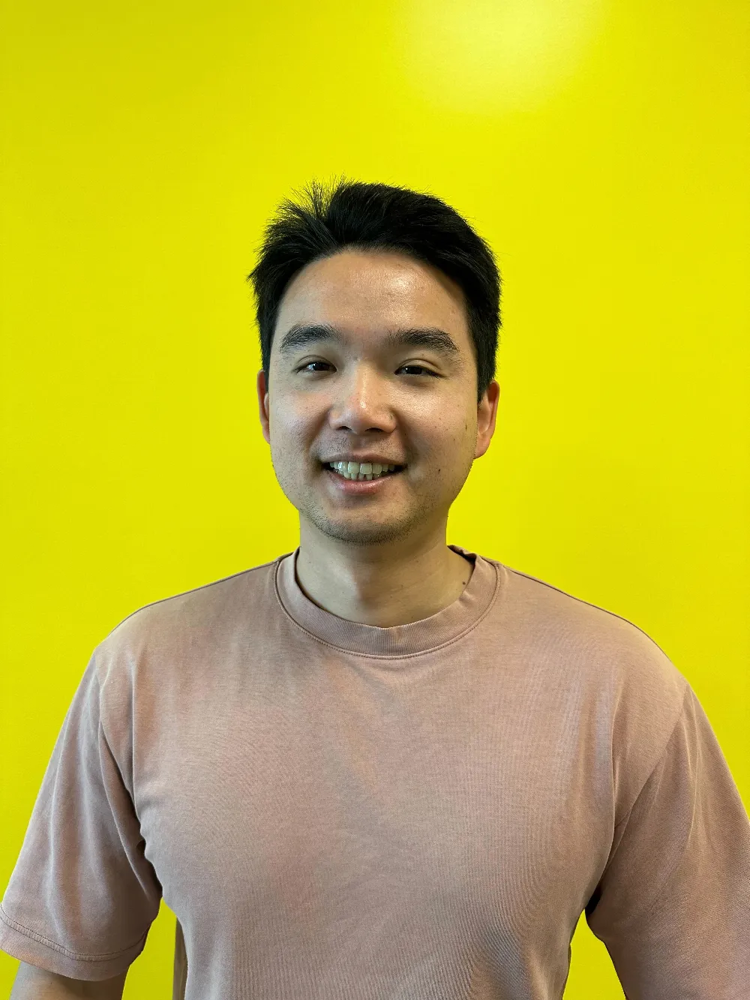

Kuan-Chieh (Jackson) Wang

Bio
Building Grok at xAI.Selected Publications
See Google Scholar for an exhaustive list.
2025
- ICML"I Think, Therefore I Diffuse: Enabling Multimodal In-Context Reasoning in Diffusion Models" In ICML 2025
- CVPR"Omni-id: Holistic identity representation designed for generative tasks" In CVPR 2025
2024
- NeurIPS"Interpreting the weight space of customized diffusion models" In NeurIPS 2024
- SIGA"MoA: Mixture-of-Attention for Subject-Context Disentanglement in Personalized Image Generation" In SIGGRAPH Asia 2024 📄 Paper 🌐 Project Page
- SIGGRAPH
- ECCV"Viewpoint Textual Inversion: Unleashing Novel View Synthesis with Pretrained 2D Diffusion Models" In ECCV 2024 📄 Paper 🌐 Project Page 🛠 Code
2023
Last updated: June 2025